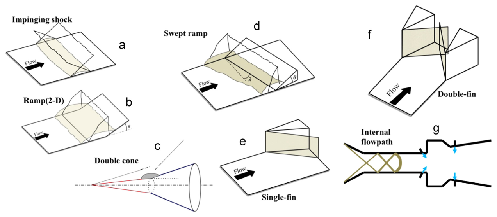
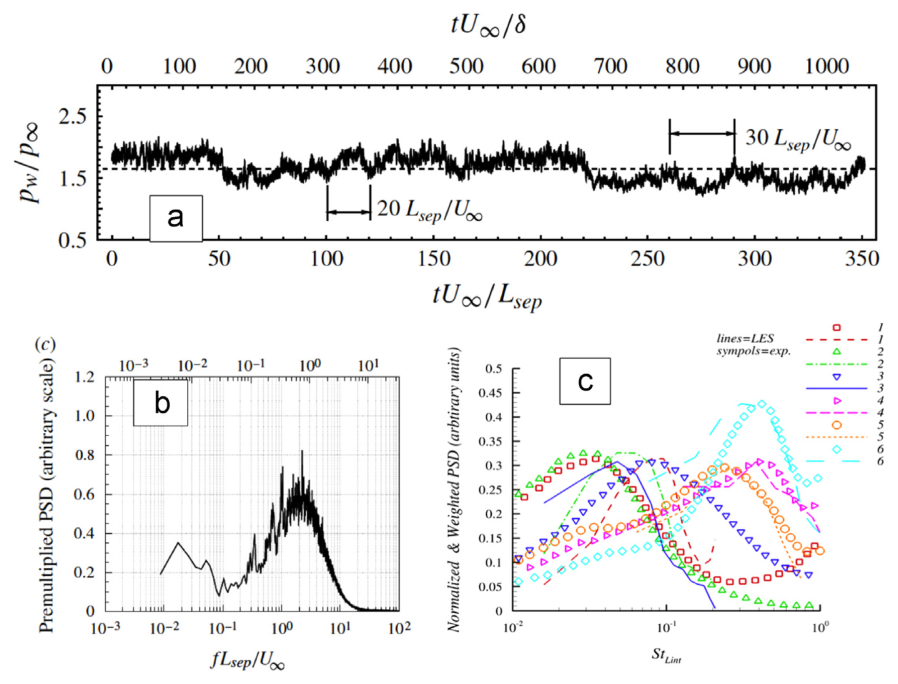
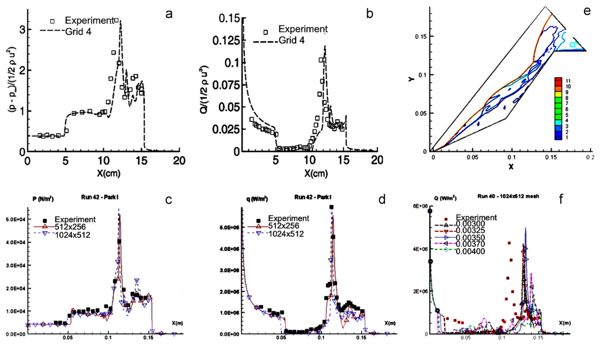
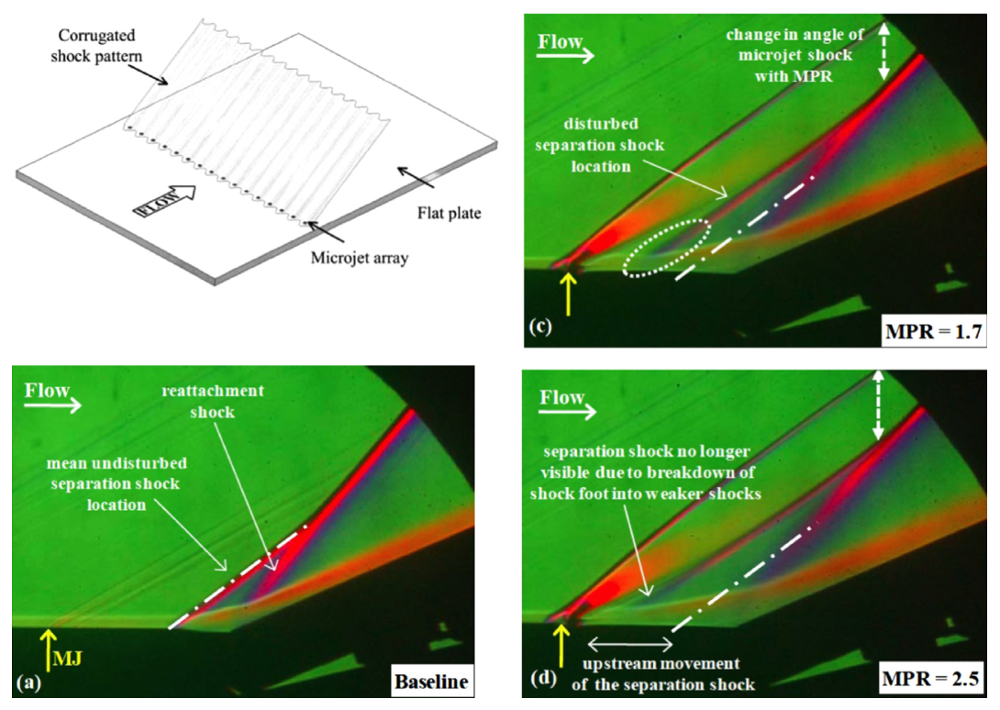

01中文摘要
从四个方面综述激波/边界层干扰研究进展：低频非定常性、气动热预测、复杂多激波干扰和流动控制。名义二维干扰的实验与数值研究在低频现象学、相关性和分离泡相干结构方面取得实质进展，并提出振荡、放大和上游边界层效应等机制；AFOSR和RTO AVT计划表明轴对称层流高温热流可较准确测量和预测，RANS模型不确定性得到量化，混合方法部分弥补不足；复杂干扰方面评述超燃冲压进气道不起动和模态转换；控制方面讨论被动与主动技术，目标是减小分离区、降低壁面载荷和调制频谱；HIFiRE-1/2飞行试验结果贯穿讨论。
原始摘要（英文/原文）
Recent advances in shock wave boundary layer interaction research are reviewed in four areas: (i) understanding low frequency unsteadiness, (ii) heat transfer prediction capability, (iii) phenomena in complex (multi-shock boundary layer) interactions and (iv) flow control techniques. Substantial success has been achieved in describing the phenomenology of low frequency unsteadiness, including correlations and coherent structures in the separation bubble, through complementary experimental and numerical studies on nominally 2-D interactions. These observations have been parlayed to propose underlying mechanisms based on oscillation, amplification and upstream boundary layer effects. For heat transfer prediction capability, systematic studies conducted under the auspices of AFOSR and RTOAVT activities have shown that for axisymmetric laminar situations, heat transfer rates can be measured, and in many cases predicted, reasonably accurately even in the presence of high-temperature effects. Efforts have quantified uncertainty of Reynolds averaged turbulence models, and hybrid methods have been developed to at least partially address deficiencies. Progress in complex interactions encompass two of the major phenomena affected by SBLI in scramjet flowpaths: unstart and mode transition from ramjet (dual mode) to scramjet. Control studies have attempted to leverage the better understanding of the fundamental phenomena with passive and active techniques, the latter exploiting the superior properties of newer actuators. Objectives include reduction in size of the separation region, surface loads and modulation of spectral content. Finally, SBLI studies have benefited handsomely from successful ground and flight test campaigns associated with the HIFiRE-1 and HIFiRE-2 campaigns, results from which are woven into the discussion, as are limitations in current capability and understanding.
02阅读说明
综述文章（Progress in Aerospace Sciences 72 (2015) 80–99，20 页）。bundle 含完整 20 页正文与 16 幅图件清单，图件为按图注裁剪的低分辨率位图，图注完整；正文无公式推导，仅有无量纲频率 St_L=fL/U∞ 的定义；参考文献约 4 页。信息完整度高，提取以正文与图注为限，未引外部知识。 文章类型：期刊、综述
03一句话核心与三句话摘要
综述SBLI低频非定常、热流预测、复杂构型与控制四方面进展，指出3D与湍流热流仍是主要短板。
- SBLI 在内外流中引起分离、载荷峰值、总压损失甚至不起动，而低频非定常机理与湍流热流预测长期缺乏共识。 AI概括
- 作者按四个主题梳理 2D/轴对称规范构型与 HIFiRE-1/2 飞行试验，指出低频非定常已可用上游边界层、剪切层不稳定与全局放大三类机制解释，St_L 峰值约 0.025–0.04。 AI概括
- 轴对称层流热流可较准确测量和预测，湍流热流 RANS 偏差可达 100%，3D 交互与流动控制仍处初期。 原文明确
04核心内容清单
| 要点 | 类型 | 重要性 | 原文依据 | 属性 |
|---|---|---|---|---|
| 低频非定常是名义 2D SBLI 的普遍特征：能量集中在比边界层细尺度湍流低一个量级以上的频带，伴随分离激波脚运动与展向波纹。 | 核心现象 | A | p.82-84 | 原文明确 |
| 近分离激波脚测点呈双模态压力分布，分离区尺寸随激波位置变化，扰动沿反射激波向下游辐射。 | 现象/统计特征 | A | p.84 | 原文明确 |
| 提出三类机制：上游边界层长结构/剖面盈亏、分离剪切层不稳定与涡脱落（气泡呼吸）、以及 Plotkin 型全局放大（耦合系统的一阶低通响应）。 | 机理框架 | A | p.85 | AI概括 |
| 多组结果把峰值集中在 0.025<St_L<0.04（St_L=fL/U∞），对应 L 约 3.5–5.5 个边界层厚度。 | 定量标度 | A | p.85 | 原文明确 |
| HIFiRE-1 飞行试验测得双模态压力分布与约 3 kHz 峰值，证明非定常不是风洞假象，且存在于轴对称构型。 | 飞行验证 | A | p.84 | 原文明确 |
| 轴对称层流热流在冷流与高温效应下可较准确测量和预测；Run 28（M9.59）与 Run 42（氮气 M11.6）为代表性验证，来流振动冻结与表面催化率是主要不确定源。 | 定量验证 | A | p.89-90，图9 | 原文明确 |
| 湍流热流与摩阻的 RANS 预测总体很差，强分离交互偏差可达 100%；混合 RANS/LES 在 2D 压缩拐角可再现均值、低频非定常与功率谱。 | 方法评估 | A | p.89-91 | 原文明确 |
| 3D 交互平均流为开放结构：单鳍无反向流、双鳍仅中心线附近很小回流区，不存在 2D 意义上的封闭分离泡，2D 结论不能直接外推。 | 拓扑差异 | A | p.87，图6 | 原文明确 |
| 侧壁与角区污染会在名义 2D 实验中产生 focus/node 等拓扑结构，可解释许多被当作 2D 特征的“寄生”现象。 | 实验/数值证据 | A | p.87，图7 | 原文明确 |
| HIFiRE-1 肩部附近气流撞击使热流比交互上游高 8 倍以上。 | 定量结果 | A | p.91，图10 | 原文明确 |
| 不起动过程中激波以 35–74 m/s 向上游传播，不起动后出现 124 Hz 或 84 Hz 喘振；控制手段（微射流、等离子体、脉冲射流）可减小分离与载荷，但总体仍处初期。 | 复杂构型/控制 | A | p.93-96，图13-16 | 原文明确 |
05引言：研究问题与领域缺口
SBLI 出现在所有实际的跨声速、超声速与高超声速飞行器中。作者沿用 Green[1] 的分类，指出四类重要场景：跨声速翼型、高速进气道、非设计状态喷管与靠近控制舵面的流动；本文讨论后三者（高速进气道、非设计状态喷管、靠近控制舵面）；其中边界层可为层流、转捩或湍流，遇到由相邻或相对表面产生的激波（p.80）。工程危害包括：外部流动中丧失控制权限、表面热-机械载荷峰值、可诱发不利结构响应的非定常性；内部流动中增大总压损失与畸变，极端情况下触发不起动（unstart）。从流体力学角度，强交互使流动分离、产生涡结构、湍流放大并改变结构参数，多种非定常现象叠加在频谱上（p.80）。SBLI 是 AFOSR/NASA/Sandia 国家高超声速基础研究计划的重要组成部分，RTO/AVT 也深度参与；欧洲、澳大利亚、日本的项目亦作出贡献。既有综述（含 Dolling[10]）给出了不同时期的状态快照，本文按其框架组织，聚焦最近进展（p.80-81）。
06流动条件与几何构型
| 项目 | 数值/描述 | 依据 | 备注 |
|---|---|---|---|
| 综述对象：名义 2D 入射激波 | Fig.1(a)；低频非定常研究主要集中在 Mach 2–3 | p.81，p.83 | |
| 综述对象：2D 压缩拐角 | Fig.1(b)，偏转角 θ；θ 增至 90° 得单鳍 Fig.1(e)，加对置鳍得双鳍 Fig.1(f)；引入后掠角 λ 得后掠斜坡 Fig.1(d) | p.81 | |
| 压缩拐角 DNS（Adams） | M3，18°，Reθ=1685 | p.84 | |
| 压缩拐角 DNS（Wu & Martin） | M2.25，24° | p.84 | |
| 圆柱-裙（轴对称） | Fig.1(c)；HIFiRE-1 构型 M3.43，传感器位于圆柱-裙接合部上游约 6 cm | p.84 | |
| 双锥（轴对称） | 25–55° 双锥，M9 层流（Holden 等实验） | p.83 | |
| 双鳍/三鳍 | M4 油流与表面压力；M8 横流面 Pitot；鳍偏角 11°/15°，平板偏转 10°（三鳍） | p.86，图5 | |
| UFAST 项目实验 | M1.7、2.0、2.5，分别由 TU Delft、ITAM、IUSTI 测量，覆盖宽 Reynolds 数范围 | p.84 | |
| 交互强度扫描实验 | M1.7，从弱（起始分离）到强（完全分离）改变交互强度 | p.84 | |
| CUBRC Run 28（冷流双锥/圆柱-裙验证） | M9.59，Re=1.4×10^6 /m（单位参考长度） | p.89，图9(a)(b) | |
| CUBRC Run 42（高温效应） | 纯氮，M11.6，总焓 9.17 MJ/kg | p.89，图9(c)(d) | |
| DLR 圆柱高焓实验 | 空气，高焓；该处未列具体 Mach 数 | p.90 | |
| HIFiRE-1 飞行弹道点 | 上升段 t=5、15、20 s，对应 M2.85、2.63、5.09 | p.90 | |
| 不起动实验 | Mach 5 进气道/隔离器模型，襟翼偏转触发 | p.93 | |
| HIFiRE-2 | M5–8，乙烯/甲烷混合燃料，凹腔火焰稳定器，侧排气喷管 | p.93 | |
| 微射流控制 | M2，24°压缩拐角，稳态射流置于交互上游 | p.94 | |
| LAFPA 控制 | 入射激波 SBLI，作动器位于 x/δ=52.6 上游，激励 St=0.5（局部峰值 St≈0.03） | p.94 | |
| 表面放电（MHD）控制 | M2.25，24°斜坡，脉冲 St=0.28，占空比 50% | p.94-95 | |
| 脉冲等离子体射流控制 | M3，20°斜坡，射流与壁面成 20°，脉冲 3.2 kHz（器件能力达 4 kHz） | p.96 | |
| 湍流数据库 Reynolds 数 | 基于边界层厚度的 Re=10^5–10^7（跨声速至高超声速） | p.89 | |
| 数值域/来流生成尺度 | 名义 2D 展向域约 2–5δ；回收-重标定域约 25δ（[59]）或约 10δ（[90]）；逆流体力 trip 约需 40–50δ | p.87-88，p.91 |
07核心现象与关键参数
| 参数 | 定义 | 数值 | 关系/说明 | 依据 |
|---|---|---|---|---|
| 无量纲频率 St_L | 以交互长度 L 与来流速度 U∞ 归一化的频率 | 峰值集中在 0.025<St_L<0.04 | St_L=fL/U∞ | p.85 |
| 交互长度 L | 反射激波与入射激波平均外推位置之间的距离（用于非定常标度） | 随交互强度约 3.5–5.5 个边界层厚度 | 用于 St_L 归一化 | p.85 |
| 分离区长度 Lsep | 平均分离区流向长度，与来流边界层厚度并列为两个大尺度 | 文中未给统一数值（随构型/强度变化） | Fig.3 中标示 Li 与 Lsep | p.83，图3 |
| 低频非定常频带 | 比边界层细尺度湍流低一个量级以上的高幅值频带 | HIFiRE-1 飞行约 3 kHz 峰值 | O(1 kHz) 量级，便于现有作动器响应 | p.82，p.84，p.94 |
| HIFiRE-1 肩部热流增强 | 肩部撞击区热流相对交互上游的倍数 | >8 倍 | 热流率比较 | p.91 |
| 不起动激波传播速度 | 不起动过程中激波向上游移动的速度 | 35–74 m/s（由中等变低再变高） | 随激波位置变化 | p.93 |
| 不起动后喘振频率 | 不起动后 buzz 现象的两个可能频率 | 124 Hz 或 84 Hz（分别对应高/低压力脉动） | 文中未给定量判据 | p.93 |
| 微射流控制压降 | 稳态微射流作用下平均压力降低幅度 | 分离激波后 7%，斜坡面 25% | 伴随非定常降低 | p.94，图15 |
| 微射流峰值 rms 降幅 | 激波非定常压力脉动峰值 rms 的最大降低 | 最高 67%（取决于射流布置与总压） | Verma 等实验 | p.94 |
| LAFPA 控制效果 | 局部电弧丝等离子体作动器对分离区的作用 | 平均分离区约减 10%；激励 St=0.5；作动器位于 x/δ=52.6 | 主要效应类似壁面加热，非不稳定波调制 | p.94，图16 |
| 表面放电控制效果 | 磁驱动表面放电作动器的稳态控制 | 分离长度减 75%（St=0.28、占空比 50% 的脉冲与稳态对比） | 同时降低低频成分与湍动能幅值 | p.95 |
| 脉冲等离子体射流控制效果 | M3、20°斜坡下脉冲射流的分离区缩减 | 最多 40%；最佳位置为拐角上游 1.5δ；频率 3.2 kHz | 动量注入与流向涡生成共同作用 | p.96 |
| RANS 热流/摩阻偏差 | 强分离交互中 RANS 预测与实验的最大偏差 | 可达 100% | 热流与摩阻均“generally poor” | p.89 |
| 名义 2D 展向域 | 获得无污染 2D 统计所需的展向计算宽度 | 约 2–5δ 似已足够 | 轴对称情形所需周向域未知 | p.91 |
08方法与数据
文献综述，不是新的实验或计算研究。作者按 Dolling[10] 的框架把进展分为四个主题：(a) 低频非定常；(b) 热流率预测；(c) 复杂（多激波-边界层）构型；(d) 流动控制（p.82）。对象限定为 SBLI 物理，不把诊断与计算工具本身作为重点；以 Fig.1 的典型构型为线索：入射激波、压缩拐角、圆柱-裙/双锥（轴对称）、后掠斜坡、单鳍、双鳍与内流（p.81）。证据来源包括：风洞实验（脉动壁压、热流、摩阻、PIV、Pitot 排架、纹影、表面油流）、RANS/LES/DNS 与混合 RANS-LES、以及 HIFiRE-1/HIFiRE-2 飞行与地面试验（CUBRC、NASA Langley）。作者明确说明图为本人及合作者工作以便获取，不代表其最具代表性；许多工作因篇幅未纳入，部分结论未展开限定条件，存在必要的概括；转捩交互不讨论（p.81-82）。
| 项目 | 内容 | 依据 | 备注 |
|---|---|---|---|
| 综述框架 | 按 Dolling[10] 的框架分四主题：低频非定常、热流率预测、复杂构型、控制 | p.82 | |
| 构型分类 | Fig.1 的入射激波、压缩拐角、圆柱-裙/双锥、后掠斜坡、单鳍、双鳍、内流七类 | p.81，图1 | |
| 实验证据 | 脉动壁压、热流率、摩阻、PIV、流场 Pitot 排架、纹影、表面油流；含时间平均与非定常测量 | p.81 | |
| 数值证据 | RANS（含涡粘模型修调）、LES、DNS、混合 RANS/LES、DES/SDES；含盲对比验证活动（AFOSR、RTO/AVT） | p.81，p.89-91 | |
| 来流边界层生成 | 回收-重标定、数字滤波、吹/吸、稳态逆流体力 trip；逆流体力法约需 40–50δ 达到平衡 | p.87-88，图8 | |
| 不确定度量化 | Roy & Blottner、DeBonis 等在多模型/多指标框架下评估 RANS；Bose 等组织专刊统一评估热流与压力预测 | p.89-90 | |
| 飞行试验 | HIFiRE-1（2010 年 3 月发射，锥-圆柱-裙，含 TDLAS 通道切槽）与 HIFiRE-2（2012 年 5 月发射，双模态超燃冲压） | p.81，p.90，p.93 | |
| 地面试验 | CUBRC、NASA Langley Arc-Heated Scramjet Test Facility、DLR HEG 等高焓设施 | p.89-90，p.93 | |
| 控制技术分类 | 被动：bleed、microramp/微涡发生器、鼓包、流向狭缝、MARTs；主动：微射流、LAFPA/NS-DBD、MHD、脉冲等离子体射流 | p.94-96 | |
| 范围界定 | 聚焦物理机理；不展开诊断/计算工具；不讨论转捩交互；文献取舍有概括 | p.81-82 |
09核心推导与公式
原文未给出从守恒律出发的完整解析推导；以下仅列出材料中可核对的定义或建模链，不补写教科书推导。
本文为综述，未给出可逐步复现的公式推导；仅把低频非定常的机理讨论组织为“上游边界层影响—剪切层振荡—全局放大”三类模型，并引用 Plotkin 放大-振荡模型与 St_L=fL/U∞ 归一化作为跨工况比较框架（p.85）。
适用边界：受限于材料，本文无可复现的推导链；Plotkin 模型、涡脱落/卷吸模型与全局模态分析的原始方程均在所引文献（如[65][66][68]）中，本文未展开，故不补写教科书推导。
10结果：主要发现与关键证据
低频非定常：在 Mach 2–3 为主的 2D 入射激波与压缩拐角中，壁压呈现高幅值频带，其频率比边界层细尺度湍流低一个量级以上，伴随分离激波脚上下游运动与展向激波波纹；近激波脚测点呈双模态分布，分离区尺寸随之变化，扰动沿反射激波向下游辐射（p.83-84）。机制归为三类：上游边界层长流向结构及剖面盈亏、分离剪切层不稳定/涡脱落与卷吸（气泡“呼吸”）、以及把激波运动视为受湍流强迫的阻尼振子的全局放大模型（Plotkin 模型）；后者可把耦合动力学表示为一阶低通滤波器，并认为低频非定常是耦合系统的内禀性质而非强迫的属性（p.85）。归一化频率峰值集中在 0.025<St_L<0.04，L 约 3.5–5.5δ（p.85）。HIFiRE-1 飞行试验测得双模态压力分布与约 3 kHz 峰值，证明该现象存在于飞行与轴对称构型（p.84）。热流：轴对称层流构型（圆柱-裙、双锥）在冷流与高温效应下均可较准确测量与预测，CUBRC Run 28（M9.59，Re=1.4×10^6/m）压力、热流与分离区吻合，Run 42（纯氮，M11.6，9.17 MJ/kg）表明 1990 年代前的化学模型可给出主要参数的合理估计；主要不确定源是喷管振动冻结导致的来流表征与表面催化率（p.89-90）。湍流热流/摩阻的 RANS 预测“generally poor”，强分离交互偏差可达 100%，混合 RANS/LES 显示希望（p.89-91）。复杂构型：3D 平均流为开放结构，单鳍无反向流、双鳍仅中心线附近很小区域有回流，2D 的封闭分离泡图像不能直接外推；侧壁/角区污染可解释许多名义 2D 实验中的“寄生”特征（p.86-87）。HIFiRE-1 肩部附近热流比交互上游高 8 倍以上（p.91）。不起动：Mach 5 进气道/隔离器中激波向上游传播速度 35–74 m/s，不起动后出现 124 Hz 或 84 Hz 的喘振（p.93）。控制：微射流使分离激波后平均压力降低 7%、斜坡面降低 25%，峰值 rms 最多降 67%；LAFPA 主要表现类似加热、分离区仅减约 10%；稳态表面放电控制使分离长度减 75%；脉冲等离子体射流在 M3、20°斜坡、3.2 kHz 下使分离区减 40%，最佳位置在拐角上游 1.5δ（p.94-96）。
| 发现 | 证据 | 证据类型 | 强度 | 位置 | 属性 |
|---|---|---|---|---|---|
| 低频非定常是名义 2D SBLI 的普遍现象，其特征频率比边界层细尺度湍流低一个量级以上。 | 斜坡与入射激波实验/计算的壁压长时程与预乘功率谱；UFAST 多风洞（M1.7/2.0/2.5）结果一致。 | 现象学 | 强 | p.82-84，图4 | 原文明确 |
| 近分离激波脚的壁压呈双模态分布，分离区尺寸随激波在上游/下游而变，扰动沿反射激波辐射。 | 适当布置的压力传感器测量；瞬时与滤波流场显示分离激波大尺度运动与展向波纹。 | 统计/机理证据 | 强 | p.84 | 原文明确 |
| 三类机制（上游长结构、剪切层涡脱落/气泡呼吸、全局放大）可共同解释观测，但因果与相关仍难分离。 | Ganapathisubramani、Dupont、Piponniau、Priebe & Martin、Touber & Sandham、Poggie 等实验与 LES/DNS 的对照分析。 | 机理综述 | 中 | p.85 | AI概括 |
| 峰值无量纲频率集中在 0.025<St_L<0.04，对应交互长度 L 约 3.5–5.5δ。 | 多 Mach 数、多交互强度结果汇总；St_L=fL/U∞。 | 定量标度 | 强 | p.85 | 原文明确 |
| HIFiRE-1 飞行试验在上升段测得双模态压力分布与约 3 kHz 峰值，证明非定常存在于飞行与轴对称构型。 | 飞行试验高带宽压力传感器；与风洞信号“qualitatively similar”。 | 飞行验证 | 强 | p.84 | 原文明确 |
| 轴对称层流热流可较准确测量和预测，即使存在高温效应；Run 28 与 Run 42 为代表性验证。 | 图9(a)-(d) 压力与热流对比；盲对比活动（AFOSR、RTO/AVT）多方法参与。 | 定量验证 | 强 | p.89-90，图9 | 原文明确 |
| 湍流热流与摩阻的 RANS 预测总体很差，强分离偏差可达 100%；混合 RANS/LES 可再现均值与低频非定常。 | Knight & Degrez 的 RANS 汇编；Edwards 等的混合方法结果（M5 压缩拐角、M8.3 双鳍）。 | 方法评估 | 强 | p.89-91 | 原文明确 |
| 3D 交互平均流无封闭分离泡，2D 的分离/反馈图像不能直接外推；侧壁污染可解释名义 2D 实验中的多种拓扑特征。 | 双鳍 M4/M8 计算与油流、Pitot 对比；圆柱-偏置裙的涡结构；Garnier/Babinsky/Gaitonde 的侧壁拓扑对比。 | 拓扑/机理 | 强 | p.86-87，图5-7 | 原文明确 |
| HIFiRE-1 肩部撞击区热流比交互上游高 8 倍以上。 | 图10(c)(d) 压力系数与热流系数对比；t=20 s（M5.09）吻合相对较好。 | 定量结果 | 强 | p.91，图10 | 原文明确 |
| 不起动激波以 35–74 m/s 上游传播，不起动后出现 124 Hz 或 84 Hz 喘振；控制手段可减小分离与载荷但仍在初期。 | Mach 5 进气道/隔离器实验（纹影、快响应壁压、PIV）；微射流、LAFPA、表面放电、脉冲射流的定量效果。 | 复杂构型/控制 | 强 | p.93-96，图13-16 | 原文明确 |
11机制解释与论证链
综述给出三类互补机制。(1) 上游影响：来流边界层存在长度超过 8δ 的流向长结构，其盈亏改变边界层剖面（更饱满/更亏损），使分离激波向下游/上游移动，长结构还可解释展向波纹（p.85）。(2) 下游/剪切层影响：分离剪切层因双拐点易不稳定，产生涡脱落与卷吸，形成“气泡呼吸”振荡；以涡脱落-卷吸为基础的振子模型可预测与多 Mach 数、多强度实验相符的时间尺度（p.85）。(3) 全局放大：把激波运动视为受湍流强迫、带恢复力的阻尼振子（Plotkin 模型），由 Navier–Stokes 系统推导可表示为一阶低通滤波器；据此低频非定常不是上游或下游强迫的固有属性，而是耦合系统的内禀响应，白噪声强迫即可复现实测谱（p.85）。Poggie 等进一步表明地面试验、计算与 HIFiRE-1 飞行数据都落在该放大模型框架内，故称分离非定常“在广泛可压缩流动中具有共同特征”（p.85）。2D 与 3D 的差别在于拓扑：3D 平均流为开放结构、无封闭回流区，不存在唯一的分离长度，2D 的反馈/标度图像不能直接移植（p.87-88）。
12讨论：结论、贡献与局限
作者把 2D 规范构型的成功归因于实验与计算长期配对：现象学（双模态、激波脚运动、展向波纹、宽带谱）已较清楚，三类机制各有证据，但因果与相关仍难分离，细节上存在语义之争（p.83-85）。2D→3D 的关键差异是分离结构拓扑：3D 平均流无封闭回流区、无唯一分离长度，频率归一化长度随展向位置变化，因此 2D 的低频标度不能直接照搬（p.87-88）。热流方面，层流轴对称在来流与壁面条件正确表征时可算准，高温效应下化学模型与催化率是主要误差源；湍流热流则受 RANS 模型缺陷限制，需混合方法、更高 Re 的 DNS/LES 与高质量非定常实验（p.89-91）。3D 构型的 Cf 与热流预测仍是未解问题；轴对称湍流模拟所需的周向/展向域尺度尚不清楚，若需全周模拟则代价可能高于名义 2D（p.91）。控制方面，被动方法（bleed、microramp、涡发生器、鼓包、狭缝）与主动方法（微射流、等离子体、MHD、脉冲射流）均能改变分离与载荷，但多数还停留在机理演示，净收益与适用条件未系统比较（p.94-96）。作者结论强调：低频非定常的理解是突破性进展，热流预测在层流轴对称情形较成功，3D 与控制仍处初期，HIFiRE 飞行与地面数据将决定未来方向（p.96）。
作者结论
作者结论（p.96）：过去数年的 SBLI 研究取得突破性进展，尤其是名义 2D 交互的低频非定常——实验与数值互补已厘清主要现象学，并提炼出可解释驱动机制的流体动力学模型；基于此的控制尝试仍只能算初期。热流测量与预测能力亦有进步：对无/有高温效应的轴对称层流流动，即使现象很复杂，在中等焓下也能较好复现；湍流热流用 RANS 的不确定度已在名义 2D 情形量化，作为提高精度的起点；3D 情形研究较少，但混合 RANS/LES 显示希望。精心表征的飞行与平行地面试验数据的获取与持续分析将很大程度决定未来研究方向。
主要贡献
- 给出四主题（低频非定常、热流预测、复杂构型、控制）的进展框架，把现象学、机制模型与工程后果串联起来。
- 系统整理了低频非定常的三类机制及支持证据，并指出全局放大模型可把耦合动力学简化为一阶低通响应。
- 汇总 St_L≈0.025–0.04、L≈3.5–5.5δ 的跨工况标度，为不同实验/计算比较提供统一无量纲参数。
- 量化了轴对称层流热流的验证水平与湍流 RANS 的不确定度（强分离可达 100%），明确层流与湍流的能力边界。
- 强调 3D 平均流的开放拓扑与侧壁污染问题，指出 2D 结论外推的风险。
- 把 HIFiRE-1/HIFiRE-2 飞行与地面数据纳入机理讨论，并给出控制技术的定量效果对照。
局限与未解决问题
作者承认：为简洁限制范围，许多有价值工作未纳入；部分结论未展开原文献的限定条件，存在必要概括；图多取本人及合作者工作，不代表最具代表性；转捩交互未讨论；诊断与计算工具本身不是重点。AI 识别：综述未做定量 meta 分析，各定量结果来自不同工况、不同归一化，横向可比性有限；3D 热流/Cf 预测被明确称为未解问题，但未给出不确定度；轴对称湍流模拟所需周向域尺度未知；控制手段缺少净收益（阻力、流量、能耗）与适用边界的系统比较；文献截止约 2014 年，之后的进展未覆盖（受限于材料）。
13对高速流动与工程的意义
对高速流动/工程的意义：为进气道、隔离器等内流部件提供 SBLI 现象与风险的总体图景——分离与激波运动导致总压损失、畸变与不起动，肩部/再附区热流可数倍于上游；为热环境预测给出方法学判断：轴对称层流可用高置信度 CFD 与热流测量，湍流则需混合 RANS/LES 并附不确定度；为控制选型给出量级参照（微射流降载 7%/25%、表面放电减分离 75%、脉冲射流减 40%），但强调多数仍属机理演示。对 HIFiRE 类飞行试验，说明地面数据与飞行数据结合的必要性。不能回答：具体构型的定量设计关联式、3D 湍流热流的可信预测、转捩 SBLI 的规律、控制方案的净收益比较。对隔离器/进气道设计的直接启示需结合具体工况另行评估（AI 推断）。
14核心图件




15可引用原文素材
| 原文短句 | 可支持的观点 | 位置 | 使用建议 |
|---|---|---|---|
| “In strong interactions, the flow separates to yield vortical structures, turbulence amplification” | 强交互的基本后果：分离、涡结构与湍流放大 | p.80，Introduction | 界定 SBLI 强交互物理时引用 |
| “an order of magnitude or more lower than those associated with fine-scale turbulence” | 低频非定常相对边界层湍流的频带位置 | p.82 | 定义“低频”时引用 |
| “separation unsteadiness has common features across a broad range of compressible flows” | 不同构型/ Mach 数/设施间低频非定常的普适性 | p.85（Poggie 等结论的转述） | 论证结果可外推时引用，注意是转述 |
| “an intrinsic property of the coupled system” | 低频非定常源于激波-分离耦合系统本身，而非单纯上游/下游强迫 | p.85 | 讨论全局放大机制时引用 |
| “heat transfer and skin friction predictions were "generally poor"” | RANS 对湍流热流/摩阻的预测能力不足 | p.89 | 评估 RANS 适用性时引用（原文带引号） |
| “there is no bubble (or recirculating fluid region) in the 3-D case even in the time-mean sense” | 3D 与 2D 分离拓扑的根本差异 | p.87 | 反对把 2D 分离泡模型直接用于 3D 时引用 |
| “over 8 times higher than upstream of the interaction” | 肩部撞击区热流增强量级 | p.91 | 说明 SBLI 热载荷峰值时引用 |
| “may be considered to be in their infancy” | 基于机理认识的控制技术仍不成熟 | p.96，Conclusion | 评价 SBLI 控制现状时引用 |
16最终核验
| 核验项 | 结论 |
|---|---|
| 仅基于全文 | 是。全部内容取自 build/deep_input/489.md 的 20 页正文、图注与图件清单；未查阅或引入任何外部文献内容。 |
| A 级要点有依据 | 是。11 条 core_points 全部为 A 级，均定位到印刷页码、图4/5/6/7/9/10/13-16 或正文段落；其中机制框架一条是 AI 概括并已标注。 |
| 属性标注 | 是。three_sentence、core_points、findings 均逐条标注属性；对作者转述他人结论的引文（如 Poggie 的普适性结论）在 quotes 中注明为转述。 |
| 覆盖范围 | 完整。bundle 1161 行、20 页一次分段读完（0—600、600—1161 行）；16 项图件清单全部记录，选用 4 幅；参考文献仅用于确认引用编号，未展开外部内容。 |
| 无编造 | 是。页码采用期刊印刷页 p.80—p.96；图号/页码严格取自图件清单（例如图15 对应 fig15_p16.png）；所有定量值（0.025–0.04、3.5–5.5δ、8 倍、35–74 m/s、124/84 Hz、7%/25%/67%/10%/75%/40%）均可在正文对应页找到。 |
需回原文确认
- St_L 峰值 0.025–0.04 所依据的数据集范围、不确定度与归一化细节未在本文展开。
- 3D 湍流热流/Cf 的预测能力被称“outstanding unknowns”，但综述未给出任何定量评估。
- 轴对称湍流模拟所需的周向/展向域尺度仍未知，文中只给出名义 2D 约 2–5δ。
- 各控制手段缺少净收益比较（阻力、流量、能耗、系统复杂度），难以直接选型。
- 转捩 SBLI 被明确排除，本文结论对转捩工况的适用性未知。
- HIFiRE-1 热流数据散度与表面催化率假设对对比结果的影响未量化。
- 综述截止约 2014 年，2015 年后的进展未覆盖（受限于材料）。
17关联文献
依据标签、板块、构型与作者脉络自动关联，可据此追踪同一问题的前序与后续工作。
18引用格式
选择期刊风格后复制；出处保留原刊名。BibTeX 可直接用于 LaTeX。
引用格式
Gaitonde, D. V. 2015 Progress in shock wave/boundary layer interactions. Progress in Aerospace Sciences 72, 80–99. https://doi.org/10.1016/j.paerosci.2014.09.002
PDF上传 PDF 并更新本页
本页缺少全文、摘要或图件时，可在浏览器本地补入 PDF。解析完全在本机完成，不上传网络；完成后会更新本页的 PDF 打开链接、原摘要、IMRaD 机器抽取、关键句与含图页面。复杂的公式语义与中文深度解读仍以原文和既有精读记录为准。